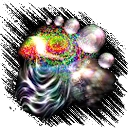
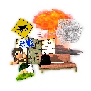

Bryce Goodies
Here's a collection of a few custom made materials and skies for Bryce 3D, as well as modifications to existing materials. I've used a lot of these in renders of my own. There's a good handful in here with a lot of variance. In here is also a few other collections of stuff.
SR64DD's Materials and Skies for Bryce
14.4 MB - Click here to download (MAT, SKY)
Cruising the Canyon Rig Examples and Lens
24.5 MB - Click here to download (BR7, OBJ)
A Couple Couple Textures and Skies
437 KB - Click here to download (TEX, SKY)
Bryce Skies made from Random Textures
1.72 MB - Click here to download (SKY)

More Atmospheric Materials
1.44 MB - Click here to download (MAT)

SR64DD's Prop Toy Box
30.8 MB - Click here to download (OBJ)
I don't need you to credit me if you make a render that uses these. Consider these "on the house" ;)
More goodies are on the way!